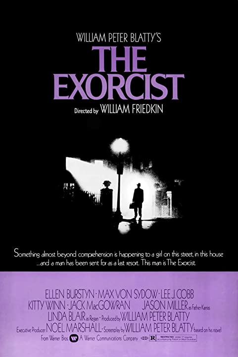
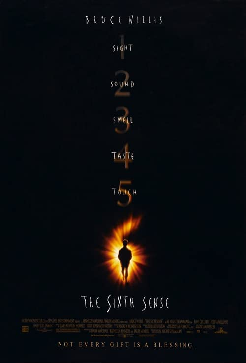
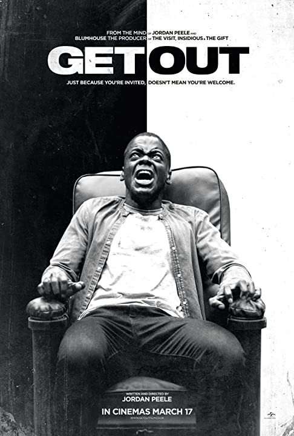
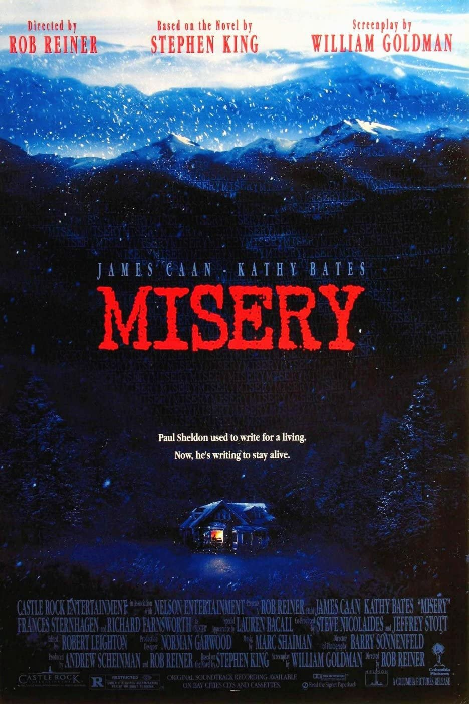
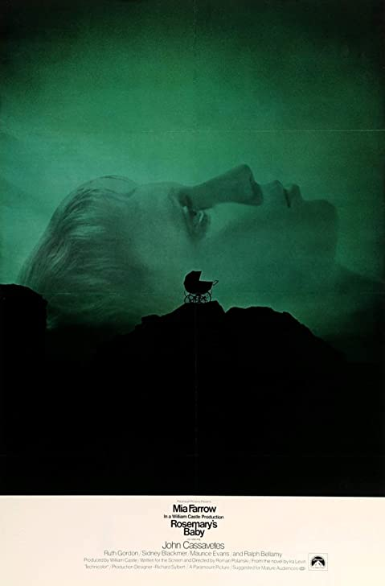

The Silence of the Lambs (1991)

The Exorcist (1973)
Jaws (1975)

The Sixth Sense (1999)
Get Out (2017)
Misery (1990)
Rosemary's Baby (1968)
Alien (1979)

Horror Movie Won Best Picture: The Silence of the Lambs (1991)
The 64th Academy Awards ceremony, presented by the Academy of Motion Picture Arts and Sciences (AMPAS), honored the best films of 1991 in the United States and took place on March 30, 1992, at the Dorothy Chandler Pavilion in Los Angeles beginning at 6:00 p.m. PST / 9:00 p.m. EST. During the ceremony, the Academy of Motion Picture Arts and Sciences presented Academy Awards (commonly referred to as Oscars) in 23 categories. The Silence of the Lambs won five awards, including Best Picture.